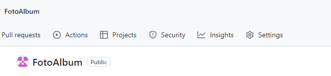

Know-How
Hier kommen zu merkende Dinge zum Thema programmieren rein, die man überall abrufen kann.
Git
Neuanlage
.gitignore erzeugen
Lege lokales repos an Über vscode/source control +
Verbindug zum remote-repo erzeugen mit
git remote add GartenRaspi https://github.com/KlausEtscheidt/GartenRaspi
(ersetze GartenRaspi)Files vom remote laden git pull GartenRaspi master
Alle files stagen und committen
Alles files hochladen git push GartenRaspi master (oder pussh -u ???)
git fetch GartenRaspi (aktuelle Info ueber remote holen, sonst letzter commit lokal unbekannt)Check ob synchron git status git log
Wenn Inhalt auf client und server schon unterschiedlich vorhanden runterladen mit –allow-unrelated-histories
git pull –allow-unrelated-histories GartenRaspi master
Neuen branch downloaden
git fetch macht alle branches lokal bekannt
dann git checkout to
git branch name :erzeugt neuen lokalen branch
git branch -vv: detail info ueber alle branches
Entferne Files (untrack)
Alle anzeigen git ls-files
Entferne aus repo git rm –cache filename
Kontrolle git status zeigt file als staged und deleted; ls-files zeigt file nicht mehr
Commit und pull
Ignorierte anzeigen git ls-files –others –ignored –exclude-standard
Committs zeigen
git log –pretty=oneline oder git log
Remotes
git remote -v (anzeigen)
git remote show name (details anzeigen)
git remote rename alter_name neuer_name (umbenennen)
History löschen
https://tecadmin.net/delete-commit-history-in-github/
Einzel-File downloaden
git show HEAD~4:findsocket.sh > tmp_findsocket.sh
mit HEAD~4 als treeish (commit id) 4 commits zurück
und findsocket.sh Datei zum downloaden
Achtung im Befehl oben steht im MD-Text HEAD\~4: da die Tilde sonst zum Format durchstreichen führt
Commits aus History entfernen
Commits, die behalten werden sollen, werden in neuen branch geschoben
Erzeuge neuen branch (‚dummy‘) aus letztem Commit (‚$last‘), der behalten werden soll git branch dummy $last
$destination ist Ziel branch $first der erste committ der behalten wird Die commits $first bis $last sitzen jetzt auf $destination (werden angewandt) dummy hat Stand von $last Achte auf ^ hinter $first git rebase -p –onto $destination $first^ dummy
Kontrolle gitk –all –date-order
Checkout $destination und bringe auf Stand von dummy (entspricht $last) git checkout $destination git reset –hard dummy
lösche dummy git branch -d dummy
lösche commits aus Quellbranch $source git rebase -p –onto $first^ $last $source
Python
Pakete erzeugen
Verzeichnis-Struktur
Zur Typerkennung mit mypy muss folgende Struktur entstehen:
Paketname (Projekt- oder Paketverzeichnis)
|
|_generateDok.py (optional: Erzeugt Doku mit pydoctor)
|_Readme.md (optionale Beschreibung evtl für Github)
|_pyproject.toml !!! wichtig: definiert das Paket für pip install
|_src Verzeichnis mit Python-Code des Pakets
|
|_Paketname Unter-Verzeichnis mit Python-Code des Pakets
|_Init.py Kann leer sein, sollte besser Dok-String für Paket enthalten
|_modulname1.py Python-Code für Modul modulname1 des Pakets
|_modulname2.py Python-Code für Modul modulname2 des Pakets
|_py.typed leere Datei. Zeigt mypy das die Module typisiert sind
|_apidoc (Ausgabe von generatDok.py)
Damit mypy die Typen in den Modulen erkennt bzw. prüft muss die Datei py.typed ins Paketverzeichnis un im pyproject.toml eingetragen werden.
vereinfachte Struktur
Es wird auf die Zwischeneben verzichtet.
Scheint z.T. Probleme mit Typ-Checkern/Lintern zu machen, die fehlende Import bemängeln
Import aber einfach mit import modulename
Projektname (Projekt- oder Paketverzeichnis)
|
|_generateDok.py (optional: Erzeugt Doku mit pydoctor)
|_Readme.md (optionale Beschreibung evtl für Github)
|_pyproject.toml !!! wichtig: definiert das Paket für pip install
|_src Verzeichnis mit Python-Code des Pakets
|
|_Init.py Kann leer sein, sollte besser Dok-String für Paket enthalten
|_modulname.py Python-Code für Modul modulname1 des Pakets
|_apidoc (Ausgabe von generatDok.py)
pyproject.toml
Beispiel für Paket KeCmdRunner
[build-system]
requires = [
"setuptools>=42",
]
build-backend = "setuptools.build_meta"
[project]
name = "KeCmdRunner"
version = "1.0.1"
authors = [{name = "Klaus Etscheidt", email = "klaus.etscheidt@gmail.com"}]
description = "Klasse zum Ausführen von System-Befehlen mit subprocess"
license = "GPL-3.0-or-later"
[tool.setuptools.package-data]
"KeCmdRunner" = ["py.typed"]
Eintrag fuer mypy:
[tool.setuptools.package-data]
"KeCmdRunner" = ["py.typed"]
Bewirkt anscheinend ?!? das die Datei py.typed mit ins Paket kommt.
Pakete zur Weiterentwicklung lokal installieren
im Vater-Verzeichnis von src (Projekt-Verzeichnis):
pip install -e .
Pakete in die Python-Lib (site-packages) installieren
wheel erzeugen
python -m buildwhell installieren
pip install --force-reinstall dist\name_des_paket_wheels.whl
komplette Anleitung unter
Kontrolle mit Pip
- pip list
zeigt alle installierten Pakete
- pip show paket
zeigt abhängigkeiten
- pip show -f kefritz
zeigt files in Paket kefritz
MyPy Typerkennung
Erfordert Eintrag [tool.setuptools.package-data] „FfmpegService“ = [„py.typed“]
in pyprojekt.toml und ausserdem eine leere Datei py.typed im Paketverzeichnis
Benutzung
Achtung Wenn das Paket FfmpegService heißt, und die Datei darin FfmpegService.py wird importiert mit:
import FfmpegService.FfmpegService as ffmpeg
Mit dir(ffmpeg) kann geprüft werden, was im Modul bekannt ist.
Python dokumentieren
größere Projekte: sphinx
sonst: pydoctor
Pydoctor
Ist eine schneller einzurichtende Alternative zu sphinx.
Mit folgendem Beispiel-Script generateDok.py wird eine Html-Doku aus den Dokstrings erzeugt:
'''Erzeugt Html-Doku des Paketes (Quellen unter src) durch pydoctor im Vereichnis apidoc'''
from pydoctor.driver import main
from pathlib import Path
if __name__ == "__main__":
# Das src-Dir liegt direkt unter diesem Script
thisDir = Path(__file__).parent
prjname = thisDir.name
outDir = thisDir.joinpath('apidocs')
# aktuelles Dir
thisDir = Path(__file__).parent
# Projektname
prjname = thisDir.name
# Format der Doc-Strings
docformat= "google"
# Ausgabe-Verz für Html
outDir = thisDir.joinpath('apidocs')
# Eingabedateien
infile1 = thisDir.joinpath('src\\KeVideoTools')
infile2 = thisDir.joinpath('test')
params: list[str] = ["--mod-member-order source ",
"--cls-member-order source",
f"--docformat={docformat}",
f"--project-name {prjname}",
f"--html-output {outDir}",
f"{infile1}",
f"{infile2}"]
paramStr = " ".join(params)
try:
main(paramStr)
finally:
input("weiter")
pass
Das Script geht davon aus, das es direkt über dem src-Verzeichnis, also im Projekt-Verzeichnis steht. Könnte geändert werden, macht aber so Sinn (siehe Pakete erzeugen/Verzeichnisstruktur).
Das Script durchsucht die beiden angegebenen infiles.
Es können auch Verzeichnisse angegeben werden, wobei z.T. unerwünschtes mit durchsucht wird.
Die Ausgabe erfolgt, wie angegeben ins Verzeichnis apidoc, das parallel zum Script liegt.
Weiter werden der Projektname und das Format der DokStrings festgelegt.
Pydoc
python -m pydoc -b startet den Browser und einen Server und zeigt alle auffindbaren Pakete an.
Das eignet sich auch zur Kontrolle ob ein Paket installiert wurde und was drin ist.
Es wertet ebenfalls die Dokstrings aus. Das Ergebnis ist aber unübersichtlicher als bei pydoctor
Paket KeInspect
(noch in Arbeit)
Tool analysiert Python-Datei und erstellt Listen von Klassen, Funktionen usw.
Das Ergebnis wird in die Zwischenablage kopiert und kann in den Modul-Dokstring kopiert werden !!!
Error-Handling
## @package socket_client
# Senden von Befehlen an den Bus-Master per socket
import logging
import traceback
import sys
logger = logging.getLogger('Raspi_GH')
class KeError2(Exception):
def __init__(self, typ, wert):
super().__init__()
self.typ = typ
self.wert = wert
class KeError1(Exception):
def __init__(self, typ, descript):
super().__init__()
self.typ = typ
self.descript = descript
def __str__(self):
desc = "Ke-Typ: {} Klasse: {}\nKurzbesch:{}"\
.format(self.typ, self.__class__, self.descript)
desc += "\ncontext:\n{}".format(self.__context__)
desc += "\ntraceback:\n"
for line in traceback.format_tb(self.__traceback__):
desc += line
return desc
class AClass:
def make_err(self):
y = 0
try:
x = 100 / y
except (BaseException, Exception) as err:
msg = 'Meine Meldung\n'
logger.error(msg, exc_info=True)
myerr = KeError1('KlausErr1', msg).with_traceback(err.__traceback__)
raise myerr
def just_raise(self):
raise KeError2('KlausErr2', 'Meldung 2')
def raise_n_catch(self):
try:
raise KeError2('KlausErr3', 'Meldung 3')
except KeError2 as myerr:
print (sys.exc_info())
print (myerr.typ)
print (type(myerr))
if __name__ == '__main__':
# AClass().make_err()
# AClass().just_raise()
AClass().raise_n_catch()
HTTP-Server
python -m http.server 9000
pip
- pip check
Zeigt alle Probleme
- pip list
zeigt alle installierten Pakete
- pip show paket
zeigt abhängigkeiten
- pip show -f kefritz
zeigt files in Paket kefritz
- pip install „paket<0.4.0,>=0.2.7“
Installiert spez Versionen
Sphinx-Dokus
Sphinx Projekt einrichten
automatisches Anlegen
Halbautomatisches Anlegen der Projektstruktur für ein Python-Paket.
Verzeichnis anlegen
mkdir doku
cd doku
sphinx-quickstart
Legt im Verzeichnis doku die nötigen Unterverzeichnisse und eine conf.py an.
Verzeichnis füllen
sphinx-apidoc -o doku -f -e -a -A "Klaus Etscheidt" -H checkweb .\src
Legt wird eine komplette Struktur inkl conf.py an.\ Diese evtl nicht verwenden, da ungeeignet!
.\src zeigt auf das Unterverz src des Paketes, in dem die Python-Sourcen liegen. Es wird auch init.py gelesen und integriert.
sphinx-apidoc -o doku -e .\src
Erzeugt nur rst-Dateien.
Bei Projekten, die kein Paket darstellen, darf im Basisverzeichnis keine init.py sein. Sonst wird das Ganze als Modul interpretiert und die Dateien werden nicht gefunden.
Der Befehl
sphinx-apidoc -o doku -e .
wird dann im Basisverzeichnis (z.B. C:\Users\Klaus\Documents_m\Fritztools\FritzMan) abgesetzt.
C-Projekte
Wenn noch nicht erfolgt, mit
pip install sphinx-c-autodoc
die Erweiterung für C-Projekte installieren.
!!! Achtung libclang wird nicht mit installiert. Die zu LLVM gehörende ist anscheinend unbrauchbar. Daher:
pip install libclang
Der Befehl zum Erzeugen der *.rst-Files für die C-Sourcen lautet dann:
sphinx-c-apidoc -o outputpath inputpath
Dabei ist outputpath der Pfad zum Doku-Verzeichnis und inputpath der zu den C-Sourcen.
Ausserdem:
in config.py den Suchpfad relativ zu config.py ergänzen:
import os
import sys
THIS_DIR = os.path.abspath(os.path.join('.'))
print (f"Wir sind in: {THIS_DIR}")
SOURCE_DIR = os.path.abspath(os.path.join('.', '..', 'main'))
sys.path.insert(0, SOURCE_DIR)
print (f"Sourcen sind in: {SOURCE_DIR}")
die extensions ergänzen
extensions = ['sphinx.ext.autodoc', 'sphinx.ext.coverage', 'sphinx.ext.napoleon',
'sphinx_rtd_theme', 'myst_parser',
'sphinx_c_autodoc', 'sphinx_c_autodoc.napoleon', 'sphinx_c_autodoc.viewcode'
]
für sphinx_c_autodoc zusätzlich die Verzeichnisse eingeben:
extensions = ['sphinx.ext.autodoc', 'sphinx.ext.coverage', 'sphinx.ext.napoleon',
'sphinx_rtd_theme', 'myst_parser',
'sphinx_c_autodoc', 'sphinx_c_autodoc.napoleon', 'sphinx_c_autodoc.viewcode'
]
Extensions
Evtl installieren für myst_parser:
pip install myst-parser
manuelles Anlegen
Manuelles Anlegen der Projektstruktur für ein Python-Projekt oder eine beliebige andere Doku.
Verzeichnis anlegen, wie oben und conf.py und index.rst von geeigneter Vorlage kopieren.
Skripte für Ausgabe
Mit
sphinx-build [options] <sourcedir> <outputdir>
werden aus den *.rst / *.md-Eingabedateien die Ausgaben erzeugt.
<sourcedir> ist dabei der Top-Knoten der Eingabedateien in dem auch conf.py steht.
Die Ausgaben landen in <outputdir>.
Zur einfacheren Bearbeitung gibt es zwei Powershell-Skripte zum Erzeugen eines kompilierten Helpfiles (Htmlhelp *.chm) bzw. einer Html-Ausgabe.
makeall_chm.ps
Erzeugt zunächst die Html-Ausgaben.
Der Name der Dateien wird in conf.py über htmlhelp_basename definiert.
Es entsteht eine entsprechende *.hhp-Datei, die von dem Skript über hhc.exe
in die *.chm-Datei kompiliert wird.
Das Skript prüft ob die chm-Datei aktuell angezeigt wird und stoppt den zugehörigen Prozess.
Wenn dieser beendet ist, wird die chm-Datei ins source-Verzeichnis verschoben und angezeigt.
Das Skript muss für neue Projekte zumindest an folgenden Punkten angepasst werden:
# Projektname der in conf.py als htmlhelp_basename eingetragen wurde
# Hieraus entsteht der Name der *.hhp-Datei
$projekt = "knoffhoff"
# Fenster-Titel der mit hhc.exe angezeigten Hilfe-Datei (zum killen)
$window_title = "knoffhoff 1.0 Dokumentation"
# Eingabeverzeichnis, das auch conf.py und die oberste index.md enthalten muss
$sourcedir = '.'
# Ausgabeverzeichnis (eigentlich immer build)
$outputdir = 'build'
makeall_singlehtml.ps1
Erzeugt ebenfalls die Html-Ausgaben und zeigt sie an.
Anpassung wie makeall_chm.ps aber ohne $windowtitle
a = "b"
build_sphinx_doku.py
Neue Version zum Erzeugen von Html in Python (ohne powershell). Beispiel unter C:\Users\Klaus\Documents_m\Excel-Doku\Ersatz_Auftragsverfolgung
conf.py ergänzen
Damit die Python-Projketdateien gefunden werden, am Anfang sys.path erweitern.
Dies ist nur für autodoc-Projekte nötig.
Hier wird das Verzeichnis FotoAlbum in den Suchpfad eingefügt:
# If extensions (or modules to document with autodoc) are in another directory,
# add these directories to sys.path here. If the directory is relative to the
# documentation root, use os.path.abspath to make it absolute, like shown here.
#
import os
import sys
# Hier liegt das Python-Basis-Verz FotoAlbum drei Ebenen über conf.py
my_dir=os.path.abspath(os.path.join('.','..','..','..','FotoAlbum'))
sys.path.append(my_dir)
Allgemeines:
project = 'knoffhoff'
copyright = '2024, Klaus Etscheidt'
author = 'Klaus Etscheidt'
release = '1.0'
# root_doc = 'Readme' macht Probleme root muss immer index heißen
htmlhelp_basename = project
Sphinx Extensions:
extensions = ['sphinx.ext.autodoc', 'sphinx.ext.coverage',
'sphinx.ext.napoleon', 'sphinx.ext.todo', 'myst_parser']
Sonstiges:
# Die Docstrings der Klasse und der init-Methode werden verwendet.
autoclass_content = 'both'
# Die Einträge werden wie im Source-Code angeordnet
autodoc_member_order = 'bysource'
# Keine Vererbung von Docstrings
autodoc_inherit_docstrings = False
# ???
napoleon_use_param = True
# Aut. Erzeugen von Ankern bei Überschriften bis level 7
myst_heading_anchors = 7
# Myst extension
myst_enable_extensions = ["deflist"]
Myst-Knoff-Hoff
https://myst-parser.readthedocs.io/en/latest/intro.html
Setup/Installation
pip install myst-parser
in conf.py eintragen: extensions = [„myst_parser“]
sphinx-autodoc2
funzt nicht
pip install sphinx-autodoc2
Eintrag in conf.py extensions = [„autodoc2“,]
Wandle rst in myst
pip install "rst-to-myst[sphinx]"
rst2myst convert docs/**/*.rst
s. https://rst-to-myst.readthedocs.io/en/stable/index.html
direktiven
rst-Format:
.. note::
Achtung
Myth-Stil:
```{note}
Achtung
```
oder klassisch:
:::{note}
Achtung
:::
Bemerkung
Achtung
ergibt:
Bemerkung
Achtung
Verwenden von restructured text
Kann über die rst-directive eingebunden werden.
```{eval-rst}
.. autocmacro:: ablauf.c::MINUTES
```
roles
Sphinx :rolle: wird zu {rolle}
Code-Blocks
```python
def myfunc():
x = 5
```
oder
:::{code-block} python
def myfunc():
x = 5
:::
wird zu
def myfunc():
x = 5
Inline Python code
`a = "b"`{l=python}
wird zu a = "b"
Sprachcodes (s. https://pygments.org/docs/lexers/#pygments.lexers.shell.BatchLexer):
- python
- ps1
- doscon
- md
- vbnet
Include
```{literalinclude} err_test.py
:language: pyton
```
Bilder
```{image} github.png
:alt: fishy
:class: bg-primary
:width: 500px
:align: center
```
Links + Targets
https://myst-parser.readthedocs.io/en/latest/syntax/cross-referencing.html
links
Externe (lokale) Files
Achtung
Absolute Pfade in Myst sind absolut zum Projektverzeichnis und nicht zum Filesystem !!
Links gehen nur mit Hmtl:
<a href = "file:///V:/Tools/Excel%20Makros/doku/Benutzer_Anleitung%20Ersatz_Auftragsverfolgung.pdf"> link </a>
Links zu anderen md-files
[](./Komponenten.md#software-komponenten)
linkt zum Anker software-komponenten der Datei Komponenten.md.
Links zu Software-Doku
[](#Auftragsposition.Init)
linkt zur Beschreibung der Init-Methode der Klasse Auftragsposition.
Evtl muss auch noch ein Modulname vorangestellt werden.
Targets
Targets automatisch erzeugen
myst_heading_anchors = 2 in conf.py einfügen
s. https://myst-parser.readthedocs.io/en/v0.13.7/using/howto.html
Referenzen gehen anscheinend nur mit der Syntax meinText, wenn targets-automatisch-erzeugen die target-id ist:
[meinText](#targets-automatisch-erzeugen)
Suche link-Targets:
myst-anchors -l 2 meine.md
Dokstrings
Eine Möglichkeit:
"""Example Google style docstrings.
This module demonstrates documentation as specified by the `Google Python
Style Guide`_. Docstrings may extend over multiple lines. Sections are created
with a section header and a colon followed by a block of indented text.
Example:
Examples can be given using either the ``Example`` or ``Examples``
sections. Sections support any reStructuredText formatting, including
literal blocks::
$ python example_google.py
Section breaks are created by resuming unindented text. Section breaks
are also implicitly created anytime a new section starts.
Attributes:
module_level_variable1 (int): Module level variables may be documented in
either the ``Attributes`` section of the module docstring, or in an
inline docstring immediately following the variable.
Either form is acceptable, but the two should not be mixed. Choose
one convention to document module level variables and be consistent
with it.
Todo:
* For module TODOs
* You have to also use ``sphinx.ext.todo`` extension
.. _Google Python Style Guide:
https://google.github.io/styleguide/pyguide.html
"""
module_level_variable1 = 12345
module_level_variable2 = 98765
"""int: Module level variable documented inline.
The docstring may span multiple lines. The type may optionally be specified
on the first line, separated by a colon.
"""
def function_with_types_in_docstring(param1, param2):
"""Example function with types documented in the docstring.
:pep:`484` type annotations are supported. If attribute, parameter, and
return types are annotated according to `PEP 484`_, they do not need to be
included in the docstring:
Args:
param1 (int): The first parameter.
param2 (str): The second parameter.
Returns:
bool: The return value. True for success, False otherwise.
"""
def function_with_pep484_type_annotations(param1: int, param2: str) -> bool:
"""Example function with PEP 484 type annotations.
Args:
param1: The first parameter.
param2: The second parameter.
Returns:
The return value. True for success, False otherwise.
"""
def module_level_function(param1, param2=None, *args, **kwargs):
"""This is an example of a module level function.
Function parameters should be documented in the ``Args`` section. The name
of each parameter is required. The type and description of each parameter
is optional, but should be included if not obvious.
If ``*args`` or ``**kwargs`` are accepted,
they should be listed as ``*args`` and ``**kwargs``.
The format for a parameter is::
name (type): description
The description may span multiple lines. Following
lines should be indented. The "(type)" is optional.
Multiple paragraphs are supported in parameter
descriptions.
Args:
param1 (int): The first parameter.
param2 (:obj:`str`, optional): The second parameter. Defaults to None.
Second line of description should be indented.
*args: Variable length argument list.
**kwargs: Arbitrary keyword arguments.
Returns:
bool: True if successful, False otherwise.
The return type is optional and may be specified at the beginning of
the ``Returns`` section followed by a colon.
The ``Returns`` section may span multiple lines and paragraphs.
Following lines should be indented to match the first line.
The ``Returns`` section supports any reStructuredText formatting,
including literal blocks::
{
'param1': param1,
'param2': param2
}
Raises:
AttributeError: The ``Raises`` section is a list of all exceptions
that are relevant to the interface.
ValueError: If `param2` is equal to `param1`.
"""
if param1 == param2:
raise ValueError('param1 may not be equal to param2')
return True
def example_generator(n):
"""Generators have a ``Yields`` section instead of a ``Returns`` section.
Args:
n (int): The upper limit of the range to generate, from 0 to `n` - 1.
Yields:
int: The next number in the range of 0 to `n` - 1.
Examples:
Examples should be written in doctest format, and should illustrate how
to use the function.
>>> print([i for i in example_generator(4)])
[0, 1, 2, 3]
"""
yield from range(n)
class ExampleError(Exception):
"""Exceptions are documented in the same way as classes.
The __init__ method may be documented in either the class level
docstring, or as a docstring on the __init__ method itself.
Either form is acceptable, but the two should not be mixed. Choose one
convention to document the __init__ method and be consistent with it.
Note:
Do not include the `self` parameter in the ``Args`` section.
Args:
msg (str): Human readable string describing the exception.
code (:obj:`int`, optional): Error code.
Attributes:
msg (str): Human readable string describing the exception.
code (int): Exception error code.
"""
def __init__(self, msg, code):
self.msg = msg
self.code = code
class ExampleClass:
"""The summary line for a class docstring should fit on one line.
If the class has public attributes, they may be documented here
in an ``Attributes`` section and follow the same formatting as a
function's ``Args`` section. Alternatively, attributes may be documented
inline with the attribute's declaration (see __init__ method below).
Properties created with the ``@property`` decorator should be documented
in the property's getter method.
Attributes:
attr1 (str): Description of `attr1`.
attr2 (:obj:`int`, optional): Description of `attr2`.
"""
def __init__(self, param1, param2, param3):
"""Example of docstring on the __init__ method.
The __init__ method may be documented in either the class level
docstring, or as a docstring on the __init__ method itself.
Either form is acceptable, but the two should not be mixed. Choose one
convention to document the __init__ method and be consistent with it.
Note:
Do not include the `self` parameter in the ``Args`` section.
Args:
param1 (str): Description of `param1`.
param2 (:obj:`int`, optional): Description of `param2`. Multiple
lines are supported.
param3 (list(str)): Description of `param3`.
"""
self.attr1 = param1
self.attr2 = param2
self.attr3 = param3 #: Doc comment *inline* with attribute
#: list(str): Doc comment *before* attribute, with type specified
self.attr4 = ['attr4']
self.attr5 = None
"""str: Docstring *after* attribute, with type specified."""
@property
def readonly_property(self):
"""str: Properties should be documented in their getter method."""
return 'readonly_property'
@property
def readwrite_property(self):
"""list(str): Properties with both a getter and setter
should only be documented in their getter method.
If the setter method contains notable behavior, it should be
mentioned here.
"""
return ['readwrite_property']
@readwrite_property.setter
def readwrite_property(self, value):
value
def example_method(self, param1, param2):
"""Class methods are similar to regular functions.
Note:
Do not include the `self` parameter in the ``Args`` section.
Args:
param1: The first parameter.
param2: The second parameter.
Returns:
True if successful, False otherwise.
"""
return True
def __special__(self):
"""By default special members with docstrings are not included.
Special members are any methods or attributes that start with and
end with a double underscore. Any special member with a docstring
will be included in the output, if
``napoleon_include_special_with_doc`` is set to True.
This behavior can be enabled by changing the following setting in
Sphinx's conf.py::
napoleon_include_special_with_doc = True
"""
pass
def __special_without_docstring__(self):
pass
def _private(self):
"""By default private members are not included.
Private members are any methods or attributes that start with an
underscore and are *not* special. By default they are not included
in the output.
This behavior can be changed such that private members *are* included
by changing the following setting in Sphinx's conf.py::
napoleon_include_private_with_doc = True
"""
pass
def _private_without_docstring(self):
pass
class ExamplePEP526Class:
"""The summary line for a class docstring should fit on one line.
If the class has public attributes, they may be documented here
in an ``Attributes`` section and follow the same formatting as a
function's ``Args`` section. If ``napoleon_attr_annotations``
is True, types can be specified in the class body using ``PEP 526``
annotations.
Attributes:
attr1: Description of `attr1`.
attr2: Description of `attr2`.
"""
attr1: str
attr2: int
Upload nach Github
Mit Sphinx Single-Html erzeugen.
Verzeichnis build/singlehtml aus .gitignore entfernen
Projekt pushen
In Github Projekt Public machen
Unter settings pages (links) wählen

rechts unter source auf github-actions stellen
Static html wählen
Im Fenster ‚workflows/static.yml‘ ganz unten
uses: actions/upload-pages-artifact@v3 with: # Upload entire repository path: '.'
path auf
./doku/build/singlehtml
{kind=link}
Ergebnis unter
https://klausetscheidt.github.io/Allgemeine-Doku/
Wenn Repo-Name „Allgemeine-Doku“
Update
Neu mit Sphinx übersetzen (single html) committen
Markdown generell
Cheat-Sheet
https://www.markdownguide.org/cheat-sheet/
VS-Code
s. https://code.visualstudio.com/docs/languages/markdown
To switch between views, press Ctrl+Shift+V in the editor.
You can view the preview side-by-side (Ctrl+K V) with the file you are editing and see changes reflected in real-time as you edit.
Python tools
Mit py -m dir2md.dir2md wird eine Datei inhalt.md mit Unterverzeichnissen erstellt.
In den Unterverzeichnissen werden ebenfalls inhalt.md erzeugt, auf die die übergeordnete Liste verlinkt.
Mit py -m dir2md.files2md wird eine Datei files.md mit Dateien eines Verzeichnisses erstellt.
VS-Code Knoff-Hoff
Tasks
Terminal / Aufgabe ausführen / „Zahnrad“ öffnet tasks.json:
{
// See https://go.microsoft.com/fwlink/?LinkId=733558
// for the documentation about the tasks.json format
"version": "2.0.0",
"tasks": [
{
"label": "lint all",
"type": "shell",
"command": "powershell",
"args": ["-ExecutionPolicy",
"Unrestricted",
"-NoProfile",
"-File",
"${cwd}/lint_all.ps1"],
"problemMatcher": {
"owner": "Pylance",
"source": "ke",
"fileLocation": ["relative", "${workspaceFolder}"],
"pattern": {
"regexp": "^(.*):(\\d+):(\\d+):\\s+(.*):\\s+(.*)$",
"file": 1,
"line": 2,
"column": 3,
"code": 4,
"message": 5
}
}
}
]
}
Hier wurde das Powershell-Skript lint_all.ps1 eingebaut, welches pslint startet:
$pyfiles = Get-ChildItem -Filter *.py
Set-Location $PSScriptRoot
$myargs = $pyfiles
$myargs += "--extension-pkg-whitelist=wx"
#$myargs += "--msg-template=`"{path}:{line}:{column}: {msg_id}: ({symbol}) {msg}`""
# $myargs += "--init-hook=`"import sys; sys.path=[r'" + C:\Users\Klaus\Documents\_m\FotoAlbum + "']+sys.path`" "
$myargs += "--init-hook=`"import sys; sys.path=[r'" + $PSScriptRoot + "']+sys.path`" "
Start-Process -FilePath "pylint" -ArgumentList $myargs -Wait -NoNewWindow
Der problemmatcher-Abschnitt in der task filtert die Ausgabe von pylint und überträgt sie in die vs-code „PROBLEME“
Erweiterungen
neue Erweiterung beginnen
siehe auch: https://code.visualstudio.com/api/get-started/your-first-extension
Tools installieren
npm install --global yo generator-code
Projekt anlegen
yo code
Installation
siehe auch: https://code.visualstudio.com/api/working-with-extensions/publishing-extension
vsce Tool installieren
npm install -g @vscode/vsce
erzeugt vsix-Paket:
vsce package
Installiert das Paket:
code --install-extension my-extension-0.0.1.vsix